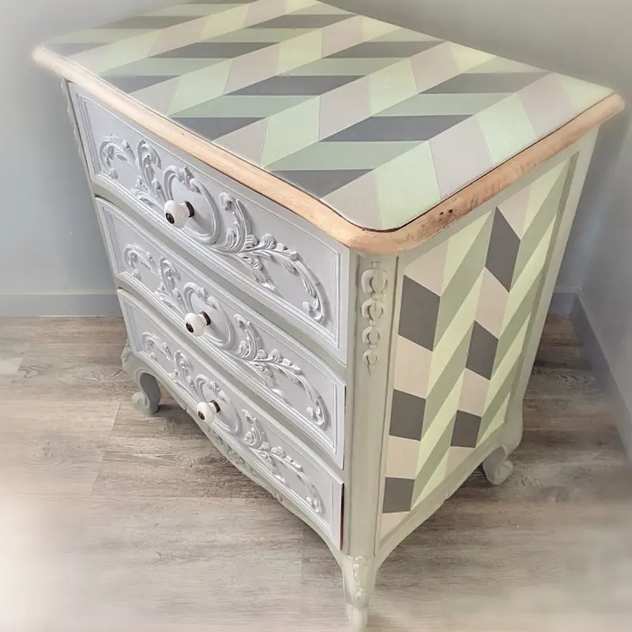
Mobilier upcyclé« Y'en a pas deux comme moi »
Chaque pièce a été chinée, remise en état et repeinte pour devenir une pièce unique.
Upcycling · brocante · Carouge
Meubles, luminaires, vaisselle et autres trésors uniques, chinés puis remis en état, repeints ou ré-électrifiés, au 20 rue Saint-Victor.
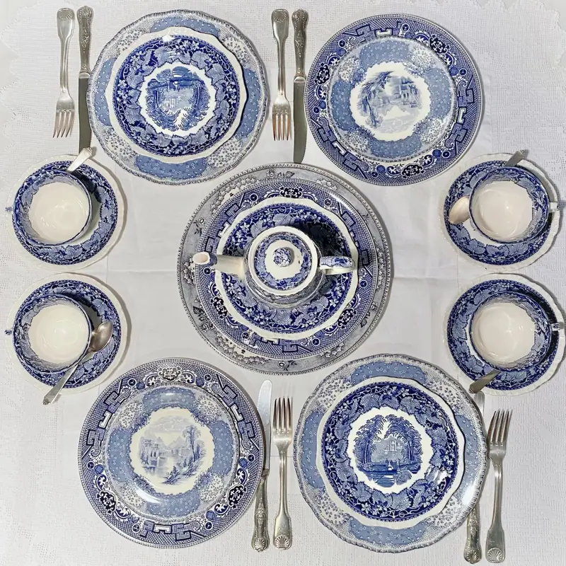
Pourquoi Pensademain ?
Demain
adverbe
« Il faut faire aujourd'hui ce que tout le monde fera demain. »Jean Cocteau
Se diriger vers une décoration écoresponsable, se tourner vers la seconde main, donner une nouvelle vie aux objets oubliés, car acheter sans cesse du neuf n'a pas de sens.
Chiner dans les vide-greniers et les marchés aux puces, assembler des pièces qui ont déjà un vécu, les modifier, les upcycler, les marier entre elles : on obtient quelque chose d'unique, de personnel et d'émotionnel.
C'est aussi bon pour la planète, qui est également notre maison.
À vos paniers

Mobilier upcycléChaque pièce a été chinée, remise en état et repeinte pour devenir une pièce unique.
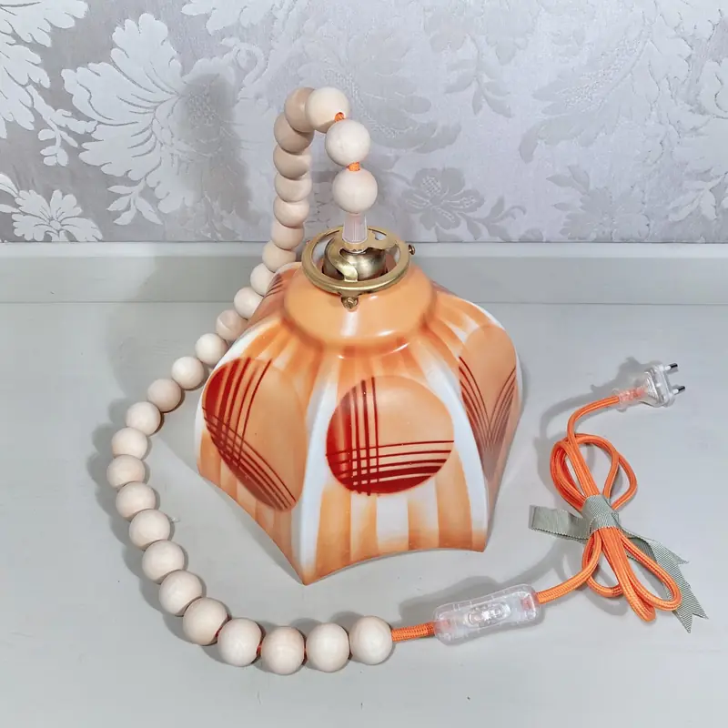
LuminairesSuspensions, baladeuses et lampes remises à jour, ré-électrifiées, customisées. Du neuf avec du vieux.
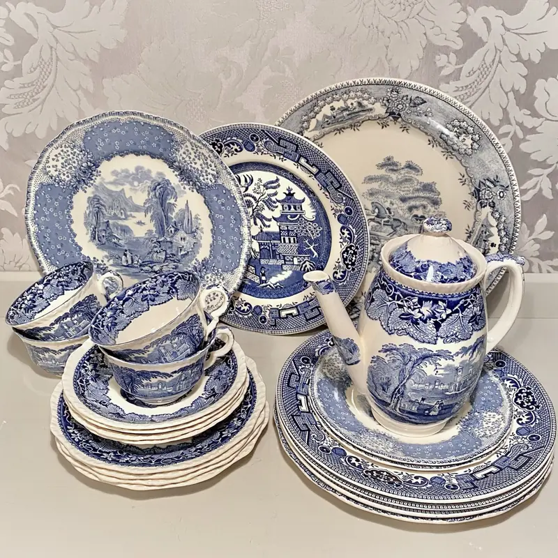
Art de la tableCéramique, poterie, verre et cristal : tout peut fonctionner ensemble pour autant qu'un thème soit trouvé.
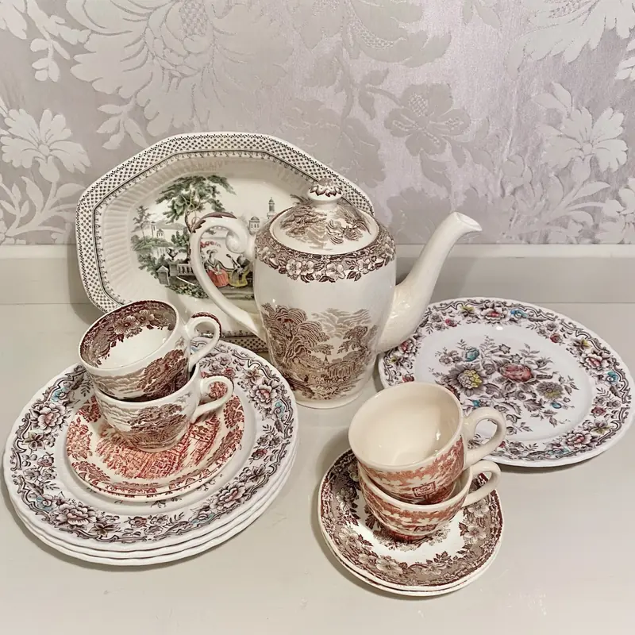
Thé ou café ?Des sets pour le thé, assemblés de pièces qui vont entamer leur seconde vie entre vos mains.
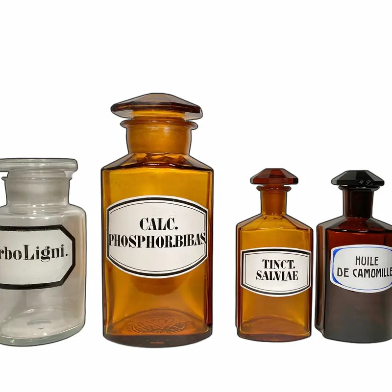
Déco et bibelotsVases, bougeoirs, cadres et bocaux : les petits trucs en plus, comme la cerise sur le gâteau.
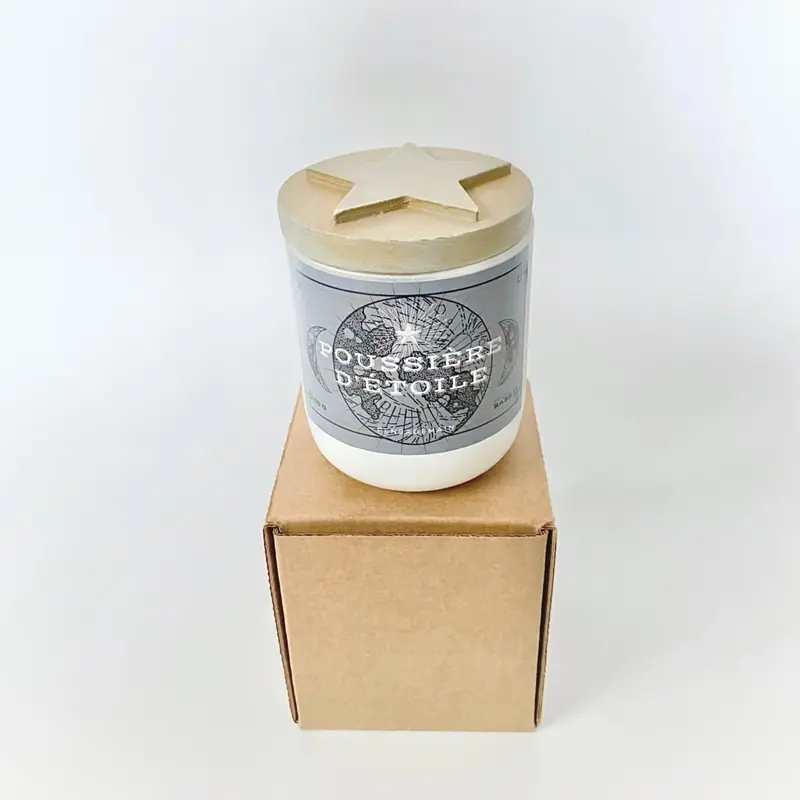
BougiesDes contenants chinés, en verre, cristal, céramique ou porcelaine, avec ou sans couvercle. Cire de soja, parfumée ou pas.
Ou à la boutique, du mercredi au samedi.
Qui se cache derrière Pensademain
30ans de vitrines dans l'univers de la mode
DiorCelineArmani
Visual merchandiser, autrement dit décorateur-étalagiste de profession, après trente ans d'expérience auprès de ces maisons, le choix d'un travail écoresponsable et d'une passion : la brocante.
« Mixer toutes ces pièces de seconde main et les remettre sur le devant de la scène, j'adore. »
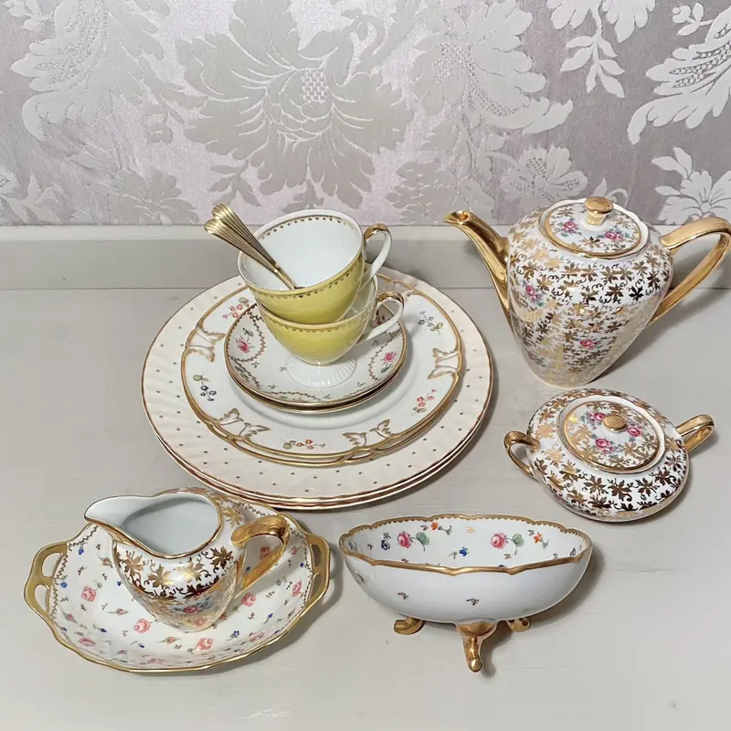
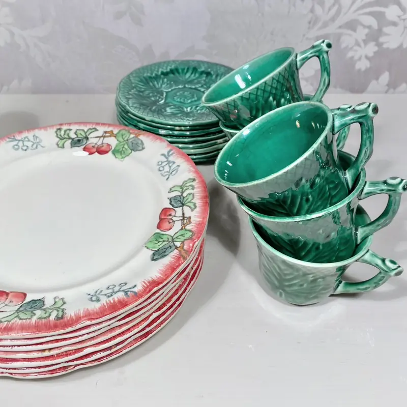
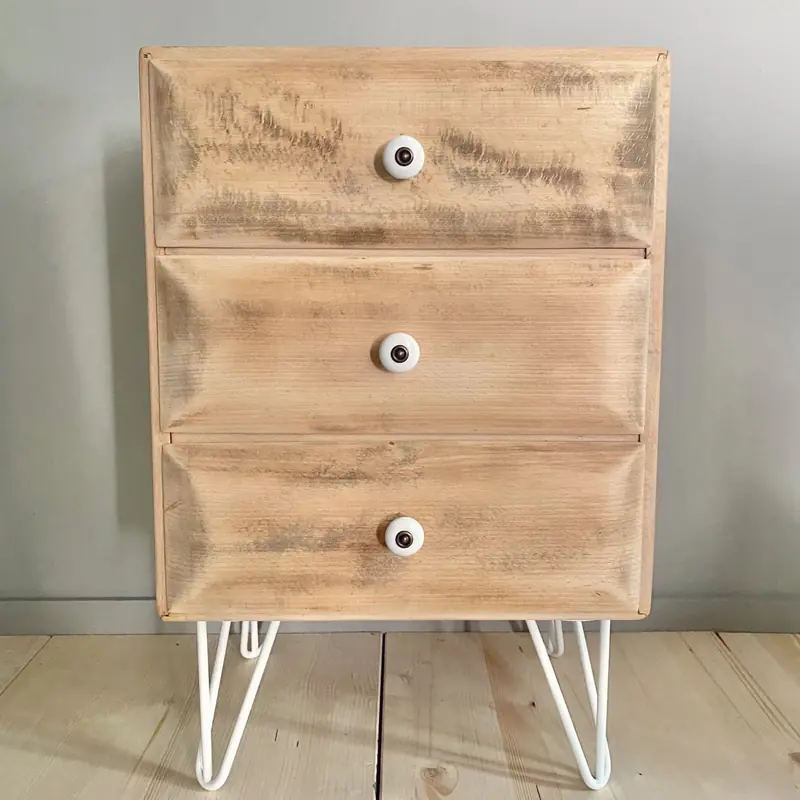
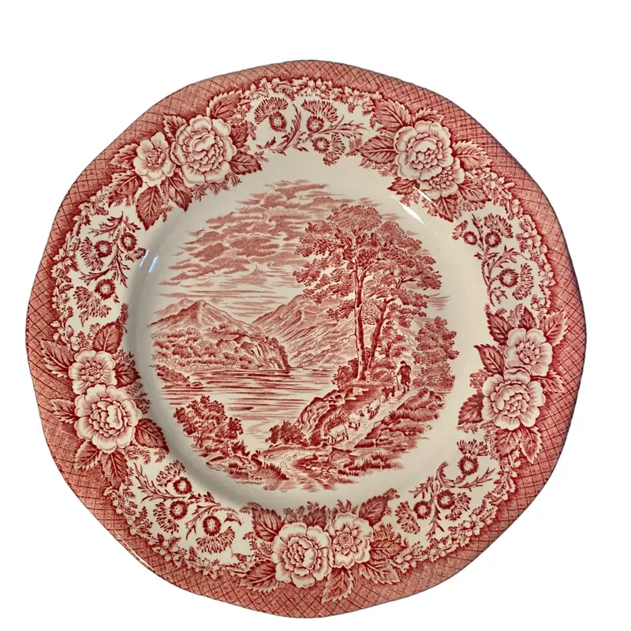
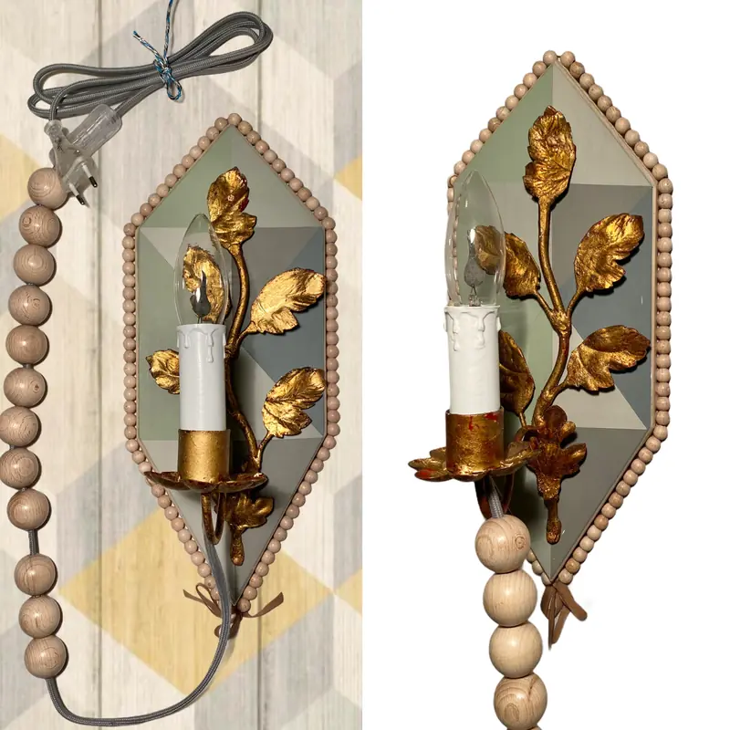
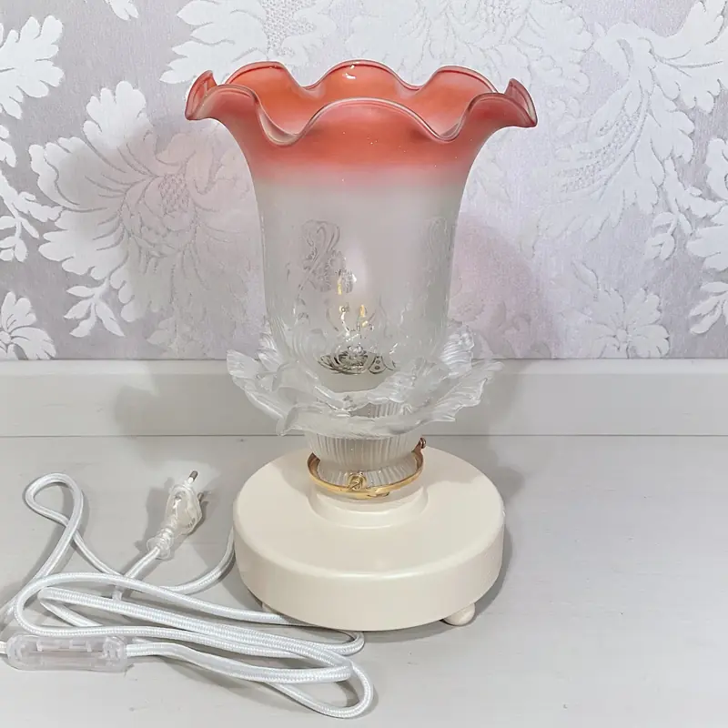
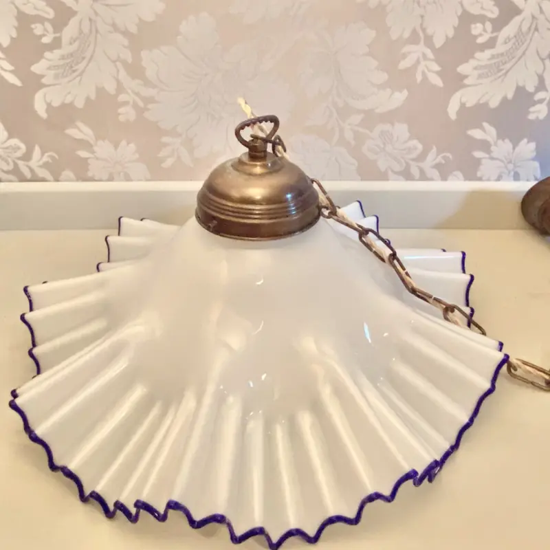
La boutique
Chaque pièce est unique : venez chiner sur place.
| Lundi et mardi | Fermé |
| Mercredi – vendredi | 10h30 – 19h |
| Samedi | 10h30 – 18h |